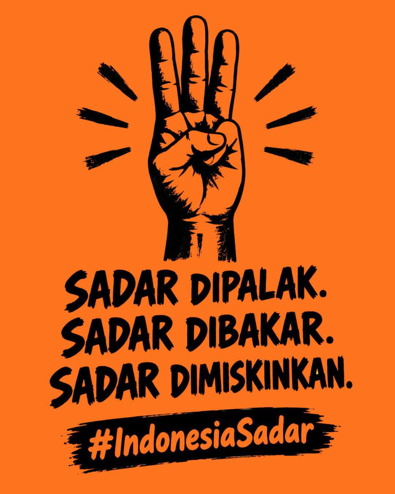
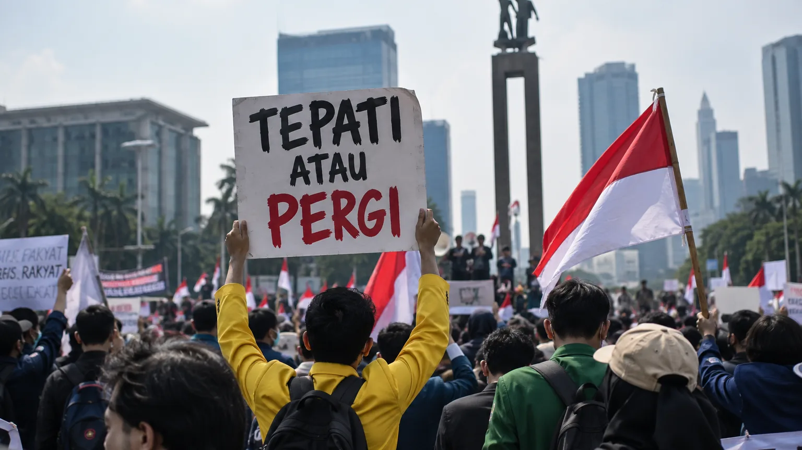
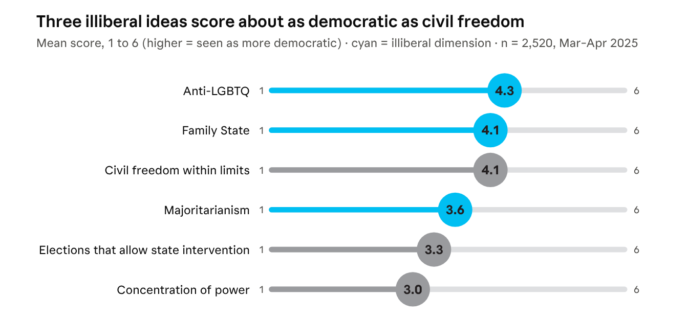
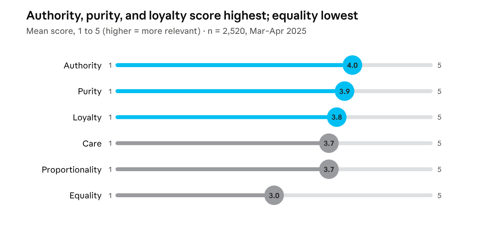
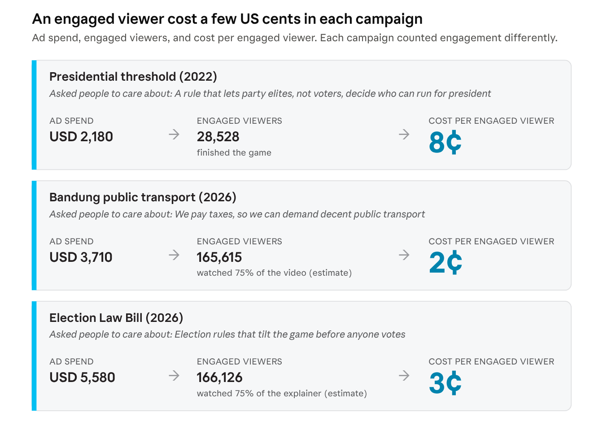
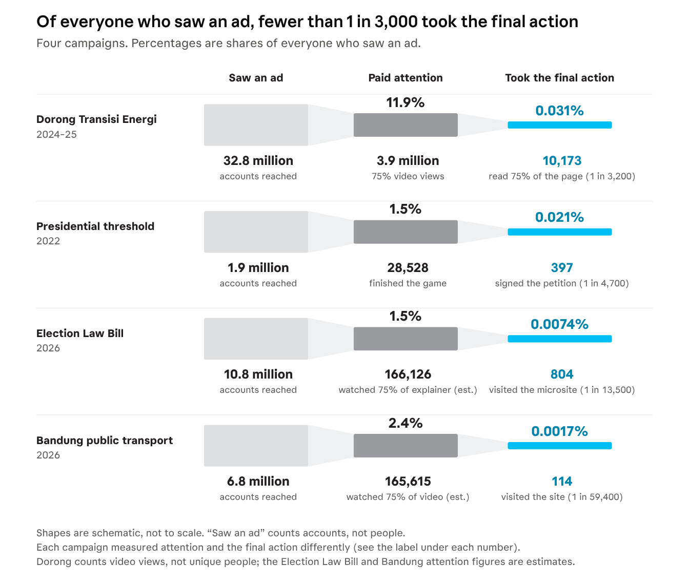
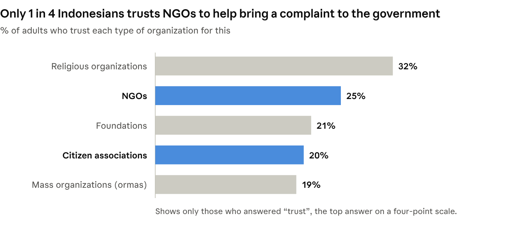

The street speaks of a broken deal
Indonesia's students are back on the streets. Since June 2026, student coalitions have marched against wasteful state spending, rising prices, and the military's creeping return to civilian affairs (Amnesty International Indonesia, 2026). On October 28, the Komite Sadar coalition rallied with five demands on the environment, the economy, civil liberties, corruption, and the cost of education (Gebrak.id, 2026; Katadata, 2026).
Their slogans are revealing. Marchers raised three fingers: aware that we are being extorted, burned, and impoverished (sadar dipalak, sadar dibakar, sadar dimiskinkan; NU Online, 2026).

Their rallying cry was "keep your promises or go" (tepati atau pergi). Even the civil liberties demand asks the government to restore (kembalikan) freedom of expression. Rights, too, are framed as a loss to undo.

That distinction matters because protests flare and fade. The next erosion of democracy will most likely arrive when the streets have gone quiet. It will be accepted or resisted by citizens who never marched, and most of them do not think about democracy the way activists do.
This piece asks whether digital campaigns can reach those people, and what happens after they do. Drawing on four digital campaigns, two national surveys, two experiments, and focus groups from 2022 to 2026, we argue two things. Framing built on conservative worldviews seems to buy attention cheaply. But without organizing, we suspect, attention leaks away into what we call internal exit. Meanwhile, how most Indonesians see their government has not yet changed.
We borrow a lens from Albert Hirschman's Exit, Voice, and Loyalty (Hirschman, 1970). When an institution fails its members, Hirschman observed, they can leave it (exit) or speak up and push for repair (voice). Loyalty shapes which path they take. Our question is what kind of loyalty Indonesians feel toward their government, and whether a campaign can turn it into voice.
The loyalty that silences
Surveys keep finding high support for democracy in Indonesia, yet the country has drifted toward competitive authoritarianism with little public resistance. Either the support is hollow, or the word means something different to the people who say it.
Our 2025 national survey set out to learn which (LabNarasi, 2026a). Rather than asking 2,520 adults across 51 districts whether they supported democracy, we described 35 conditions in an imaginary country. We asked, face to face, whether each was democratic and whether they would want to live there.
The answer was sobering. People do want democracy: those who called a country democratic also wanted to live in it. But the democracy they want has illiberal elements. Their answers fall into six dimensions: anti-LGBTQ, the Family State, civil freedom within limits, free elections that allow state intervention, majoritarianism, and concentration of power (Figure 1). People rated anti-LGBTQ conditions and the Family State as democratic as civil freedom, or more.

Beneath these answers lies conservative moral ground. Moral psychologists describe six intuitions that people use to judge right from wrong: authority, purity, loyalty, care, proportionality (getting what you deserve), and equality. We measured them with an Indonesian version of the Moral Foundations Questionnaire (version 2) (Atari et al., 2023). People rate statements about each intuition from 1 to 5. Indonesians scored highest on authority (4.0), purity (3.9), and loyalty (3.8), and lowest on equality (3.0). Scholars read this pattern as a conservative worldview.

We focus on one illiberal dimension: the Family State (Negara Kekeluargaan). It is close to organicism, the view of society as one living body (Bourchier, 2015; Reeve, 2017). In this view, the government is the head of the family and the only rightful source of order. Like a father with his children, it permits and disciplines its citizens. Speaking up feels like disloyalty, and staying quiet feels like keeping the peace. None of it feels like domination. It feels like unity or harmony.
In Hirschman's terms, this is loyalty that silences. Our 2025 focus groups in Delta Pawan, Bontang, and Sorong heard exactly this. Participants understood that they ought to speak up, but the fear of being seen as anti-government held them back more than anything else.
The usual answer is to correct the public's understanding. The evidence warns against this: when lower-income Indonesians were shown a procedural definition of democracy, their support for democracy fell (Ananda and Bol, 2021). So we do not sell "liberal democracy." In Indonesia, "liberal" carries heavy baggage. In 2005, the Indonesian Ulema Council declared religious liberalism forbidden (MUI, 2005). In 2022, President Joko Widodo complained that Indonesia's democracy had become "very, very liberal" for an Eastern people (Indoleft, 2022).
We name the enemy the arbitrary use of power (kesewenang-wenangan). We plan to take this frame public, but only after testing it, because the word cuts both ways. The dictionary defines it as acting as one pleases, without regard for the rights of others (KBBI, n.d.), so it can describe anyone. A conservative audience could aim "high-handedness" (sewenang-wenang) at activists, rather than at those in power. So the test must also ask whom people think the word is about.
Still, one group is worth betting on. Roughly 28% of Indonesians, whom we call Conservative Quasi-Democrats, hold conservative moral values. Yet they see the Family State, majoritarianism, and the concentration of power as less democratic than other Indonesians do. Like every other group, however, they reject LGBTQ rights. They are also the least trusting of civil society organizations (CSOs), a fact that will matter later.
Attention for the price of a few cents
The first lesson is encouraging. Dry topics like election rules and public transport rarely trend, yet they can win the attention of many Indonesians quickly and cheaply. In three campaigns, an engaged viewer cost us a few US cents (Figure 3; full figures in Table 1 in the Notes).

These numbers measure attention, not persuasion. No campaign above measured whether viewers understood or accepted the message. Reach counts accounts, not people, and every viewer figure in Figure 3 is an estimate.
Why might attention have come so cheaply? All three campaigns named an unfair rule: a game your favorite politician can never win, taxes paid for poor service, a referee planted before the match. Each appealed to proportionality: people should get what they pay for, and rules should not cheat. Two of them added loyalty. In the presidential threshold campaign's online game, people picked any candidate, real or fictional, and then saw that the rule gave their pick zero chance. The Bandung campaign, Bandung People Speak Up (Urang Bandung Lantang Bersuara), recast complaint as loyalty to the city: you speak up because you love Bandung.
We tested parts of this before the Bandung campaign went live. In an online experiment with 3,516 respondents (December 2025 to January 2026), one-minute videos asking people to demand better public transporat raised their belief that they could make a difference. They also raised people's intention to act by 5 to 6 percentage points. In eight Bandung focus groups in March 2026, every segment accepted the taxpayer message and felt safe sharing it, while the "protest is patriotic" line fell flat.
We cannot yet claim that proportionality made the attention cheap. The Election Law Bill ads point to other causes. They cost 41% less per thousand impressions than our Meta average. If the frame had made them cheap, we would expect Meta to rate them well, because Meta charges less for ads that viewers welcome. It did the opposite: it ranked three of the four explainer videos below average for quality. Meta bases that rating mainly on how often viewers hide or report an ad, and a low rating usually raises the cost, not lowers it. So something besides the framing kept the cost down, most likely broad targeting and low-cost placements.
Why people notice but do not act: internal exit
The second lesson is less comfortable. When a message names a problem but gives people no safe way to act and no one to act with, we suspect they choose internal exit over voice. By internal exit we mean withdrawing from participation without leaving the country. People abstain from the vote, leave the problem to the government, or simply do not take the next step. We say "internal" because Hirschman's exit means leaving, and these citizens stay where they are.
Internal exit was the norm long before our campaigns began. People in our 2025 focus groups said they feared speaking up. Our 2025 national survey found that few Indonesians do anything political beyond voting, even though turnout is among the highest in the world. We then watched internal exit in an experiment.
The experiment comes from our climate work, where we could observe what people did with their own money. In this experiment (about 2,000 respondents, April–May 2026, unpublished), we showed people a video that framed the energy transition as a personal benefit. It raised support for energy policy and for fuel-subsidy reform. Yet real donations from the survey payment fell by 5.6 percentage points compared with the placebo group, and petition signing did not change. Attitudes rose while costly action fell, in the same people. Our untested explanation: the video's closing call to press the government quietly handed responsibility to the state. A rival explanation is just as plausible: framing the transition as a personal benefit may have crowded out the moral reasons to give.
Attention did not turn into action on its own. In all four campaigns, including Dorong Transisi Energi, our 2024–25 campaign on the energy transition, only a small share of the people who looked took the next step. That is normal for paid ads (Figure 4; full figures in Table 2 in the Notes).

Of everyone who saw an ad, fewer than 1 in 3,000 accounts took the final action (Figure 4). In three campaigns, one final action cost USD 1.70 to 6.90, within the USD 1.40 to 8.30 that Indonesian advertisers reportedly pay for a sale or sign-up (an industry blog, Olakses, 2026). Only Bandung cost more, at about USD 33 per site visit. So the low rate does not mean our framing failed. It means ads alone do not move people to act.
Two obstacles made the final action more expensive than it had to be. The first is how we bought the ads. We paid mostly for video views, not clicks, so the platforms found us viewers rather than people likely to click. The second is the platforms themselves. Links in short-video captions are hard to click, and platforms want users to stay in their apps. Yet these obstacles do not explain everything. In the climate experiment described above, people could donate without leaving the survey, and they still gave less.
So the obstacles are not only technical. We suspect many people also see acting as the government's job, not theirs.
Low trust in the organizations that ask people to act may be another reason. In our 2025 national survey, we asked how much people trust five types of organizations to help them bring a complaint to the government (Figure 5; LabNarasi, 2026a). Only 25% trust NGOs, and another 35% tend to trust them. Small groups of citizens who share an interest, fare worse: 20% trust them, and another 29% tend to trust them. A signature, a donation, or a visit to an unfamiliar website feels risky when people are unsure of the group behind it. Our climate survey shows the same gap: more than half of Indonesians would be proud to be part of a group that demands an energy transition, yet only 1 in 10 has ever taken part (LabNarasi, 2026b).
This is our reading, not a tested finding. Trust is also not the whole story. In our national survey, the group that trusts civil society organizations the most takes part the least. The Conservative Quasi-Democrats trust them the least, yet they are, if anything, slightly more active than others.

Can loyalty shift from the rulers to the people?
The third lesson matters most. Low trust may explain part of the gap between attention and action. But the deeper reason may be the view that acting is the government's job, not citizens'. We think that view rests on the Family State belief: the government is the head of the family and the only rightful source of order. If so, better ad buying and easier links will only go so far.
In the online experiment with the Bandung transport videos (described earlier), support for the Family State fell by only 0.06 to 0.07 points on a six-point scale, too small to tell apart from no change. But the video asked viewers to demand better public transport; it did not address the belief directly, so this was a side measurement rather than a real test. Yet the same video raised people's intention to act by 5 to 6 percentage points. So people can become more willing to speak up while still seeing the government as a father figure. People saw the video only once, though, so this does not prove the belief cannot move.
Why not leave the belief alone, then, and only ask people to act? Because of quiet acceptance. A citizen who still believes the government knows best may speak up once about buses or election rules, and then accept the next erosion of democracy.
The Family State belief is a kind of loyalty to the government, like a child's loyalty to a father. Quiet acceptance is what that loyalty produces. But Hirschman also showed that loyalty does not have to silence. It can be the very thing that keeps people from leaving and pushes them to speak up. So the choice is not between loyalty and voice. It is about where people place their loyalty. Placed in a government that must not be questioned, loyalty silences them. Placed in the people as the true owners of power, and in the rules that keep leaders answerable to them, it lets them speak.
Our next test asks whether a short message can move that loyalty. In mid-2027, a national face-to-face survey of about 2,650 people will compare two short audio messages with a neutral one. Unlike our campaigns so far, it will measure whether opinions change, not only who saw a message. One uses a family analogy: a good father is open to being questioned by his children, and even corrected by his wife. The other uses taxes: we all pay and services are poor, so demanding better and asking for accountability are not defiance. The two go to different lengths. The taxes message casts the government as our manager or caretaker (pengurus), not the head of the family. The family message keeps the father but makes him answerable to his family. Whatever the results, we will publish them.
What we would do differently
Framing buys attention. We believe organizing turns it into action, though our campaigns did not test this. By organizing we mean civil society and community groups bringing people together to act, again and again. Our campaigns treated attention as the finish line. In our experiment, a video raised people's intention to act. In the field, fewer than 1 in 3,000 accounts that saw an ad took the final action. Something has to close that gap. In the long work of protecting democracy, it is only the start.
Three changes follow:
First, we would co-campaign with communities people already belong to. The Conservative Quasi-Democrats, the group we are betting on, trust CSOs the least, so an NGO's web page is a weak next step. The Forum Diskusi Transportasi Bandung shows what we mean: people join this citizens' forum as residents of Bandung, not as supporters of an NGO. Our Bandung campaign did not test this, though. We paid for ads that reached strangers, and no one, including us, gave the forum support or resources to organize the people they reached.
Second, we would make the first step to real action small and place it where people already are. A comment, a reply, a message, or a pledge inside the platform asks far less than a link to another website. The community organizer can take it from there.
Third, we would build messages around people's right to choose, not around a leader. In the presidential threshold game, what people defended was their own right to choose, not a favorite politician. This matters in Indonesia. As loyalty to parties collapsed, from about 80% of voters identifying with a party after 1998 to 7% by 2014, charismatic leaders appealed to voters directly, and the rivalry between Jokowi and Prabowo left the country more divided than it had been in decades (Warburton, 2020).
What would help
Two questions remain open: how to turn cheap attention into action, and whether the Family State belief can move. No single organization can answer them alone.
Three kinds of support would move the field forward.
The first is shared research. Our reading of the climate experiment is that asking people to "press the government" may lead them to leave the work to the state. But nobody has yet tested that call against asking people to act themselves, while measuring what people actually do. Several organizations could share the cost and the data of such a test. Together they could also build a shared stock of pre-tested messages for any coalition to use when a policy window opens.
The second is support for organizing. Reach is the easy part to buy. We believe organizing in communities people already belong to turns attention into action, though no one has tested this in our campaigns. Funders could back community organizers directly, and help NGOs become better organizers.
The third is patience measured in years. Learning whether anything moves the Family State belief will take repeated measurement, not a single campaign.
Attention, we have learned, is cheap. Loyalty is not. The work ahead, which no one can do alone, is to turn cheap attention into loyalty that speaks.
Notes
About this piece. Written by Paramita Mohamad of Communication for Change (C4C) and Bahana for Session 8, Digital-First Strategies and Narrative Power, at the Movement to Power Exchange in Bangkok on November 16, 2026.
How to read the evidence. Tested means a randomized experiment with a comparison group. Observed means campaign monitoring data with no comparison group, so it shows what happened, not why. Our reading means our interpretation, not yet tested. Preliminary figures may change: the Bandung campaign report closes on November 18, 2026, and we will update this page then.
Money. All US dollar amounts use Rp18,000 per dollar, rounded from IDR 18,096 on November 10, 2026 (Katadata Databoks, 2026). The 2022 figures use the same rate. The rupiah was stronger in 2022, so at the rate of the time those costs would be somewhat higher in dollars.
Unpublished work. The online video experiment and the Green Barometer experiment (the climate experiment in the text) are not yet published; figures here come from internal reports by Bahana (2026). In the Green Barometer experiment, the personal-benefit video raised support for energy policy by 0.13 standard deviations and acceptance of fuel-subsidy reform by 0.25 standard deviations, compared with the placebo group.
The presidential threshold. The Constitutional Court struck down the presidential threshold in January 2025, in a case brought by four students of UIN Sunan Kalijaga (Kontan, 2025). We shared their cause, but we claim no part in that ruling.
Open data. Anyone can use our data to check our findings or run their own analysis. The Green Barometer survey on public demand for a fast and fair energy transition, with its questionnaire, raw data, and codebook, is on LabNarasi (in Indonesian; the site asks to fill a form before download). Data from our 2025 national survey on the meaning of democracy will be added there soon.
Table 1: Cost of engaged attention in three campaigns. US dollar amounts use Rp18,000 per dollar; rupiah figures in brackets match our reports to funders and partners.
| Campaign | What it asked people to care about | Ad spend | Engaged attention | Cost per engaged viewer |
|---|---|---|---|---|
| Presidential threshold (2022), with Sindikasi Pemilu dan Demokrasi | A rule that lets party elites, not voters, decide who can run for president | USD 2,180 (Rp39.2m) | 28,528 people who played the game to the end | about 8 cents (Rp1,373) |
| Bandung public transport, Phase 2 (Aug–Sep 2026), with Forum Diskusi Transportasi Bandung | We pay taxes, so we can demand decent public transport | USD 3,710 (Rp66.7m) | an estimated 165,615 people watched at least 75% of the video, about 2.1% of Bandung Raya's estimated 7.76 million social media users (preliminary number) | about 2 cents (Rp403) |
| Election Law Bill (RUU Pemilu, Aug–Oct 2026), with Perludem and the civil society coalition | Election rules that tilt the game before anyone votes | USD 5,580 (Rp100.4m) | an estimated 166,126 people watched at least 75% of the explainer, about 0.09% of the estimated 182 million eligible 2029 voters who use the internet | about 3 cents (Rp605) |
Table 2: Attention and the next step in four campaigns. The denominators differ, so read the pattern rather than the ranking.
| Campaign | Attention indicators | Next step taken | Rate |
|---|---|---|---|
| Presidential threshold (2022) | 28,528 people who played the game to the end | 397 petition signatures from the game site | about 1.4% |
| Election Law Bill (2026) | an estimated 166,126 explainer viewers | 804 tracked visitors to the campaign site | about 0.5% |
| Dorong Transisi Energi (2024–25) | 3,911,931 views of at least 75% of the video ads | 10,173 read 75% of the web page | about 0.26% |
| Bandung public transport, Phase 2 (2026) | an estimated 165,615 video viewers | 114 visits to the campaign site (preliminary) | about 0.07% |
Table 3: Who funded and ran the work
| Work | Partners | Funder |
|---|---|---|
| Presidential threshold campaign (2022) | Sindikasi Pemilu dan Demokrasi | Sindikasi Pemilu dan Demokrasi |
| Dorong Transisi Energi campaign (2024–25) | — | Visi Indonesia Raya Emisi Nol Bersih (ViriyaENB) |
| National survey on the meaning of democracy (2025) | Aurelia Ananda, Griffith University (co-investigator) | Kurawal Foundation |
| Focus groups in Delta Pawan, Bontang and Sorong (2025) | Cimigo, as data collector | Kurawal Foundation |
| Online video experiment (Dec 2025–Jan 2026) | Swayable as data collector through web panel | Luminate (Swayable credits, in kind) |
| Bandung focus groups (March 2026) | Cimigo, as data collector | Open Society Foundations, through Asia Democracy Network |
| Bandung public transport campaign (2026) | Forum Diskusi Transportasi Bandung, as co-campaigner | |
| Election Law Bill campaign (2026) | Perludem and Koalisi Masyarakat Sipil untuk RUU Pemilu, as co-campaigners | |
| Green Barometer survey (April–May 2026) | Armand Sim, Monash University, Indonesia (co-investigator); Cimigo, as data collector | ViriyaENB |
| Green Barometer experiment (April–May 2026) | Armand Sim (co-investigator) | ViriyaENB |
Table 4: All 24 illiberal conditions in our survey, ranked by the share of Indonesians who called each one democratic, with the dimension each belongs to (Figure 1). A condition counts as illiberal when it breaks the criteria of the EIU Democracy Index. The dimensions come from a factor analysis of all 35 conditions; three conditions fit no dimension (—). Bahana national survey, face to face, n = 2,520 adults in 51 districts, 10 March–24 April 2025 (LabNarasi, 2026a).
| # | Condition in an imaginary country | Dimension | % call it democratic | % would want to live there |
|---|---|---|---|---|
| 1 | Criticism must come with a solution and suggestions for improvement | Family State | 66.5 | 63.9 |
| 2 | Media must balance negative and positive news about the government | Civil freedom within limits | 66.5 | 62.8 |
| 3 | The state adds voting conditions beyond being 18 or married | Family State | 64.4 | 59.4 |
| 4 | Neighbors may evict a same-sex couple living together | Anti-LGBTQ | 60.5 | 62.2 |
| 5 | Gay, transgender and other sexual minorities are barred from some jobs, such as teacher or soldier | Anti-LGBTQ | 51.8 | 51.6 |
| 6 | Courts take the government's input into account | Family State | 50.9 | 49.1 |
| 7 | Security forces may break up protests at any time | Family State | 50.2 | 47.1 |
| 8 | Citizens need a government permit to hold a public discussion | Family State | 49.5 | 49.2 |
| 9 | People fully trust the policies and decisions of the government they elected | Family State | 47.6 | 44.9 |
| 10 | Most citizens think a competent leader matters more than a democratically elected one | — | 43.6 | 48.2 |
| 11 | The president screens and approves who may run in elections | Elections that allow state intervention | 37.8 | 36.7 |
| 12 | The country's leader may act outside the law in an emergency | — | 36.1 | 35.7 |
| 13 | Parliament's job is to support the government's programs, not to oversee them | Family State | 34.3 | 34.3 |
| 14 | Rules limit which issues the media may write about | Family State | 34.2 | 35.1 |
| 15 | The government puts the interests of the majority religion first | Majoritarianism | 33.5 | 35.1 |
| 16 | Minority citizens follow the rules and way of life of the majority | Majoritarianism | 33.3 | 34.6 |
| 17 | Criticizing any religion is a serious crime | — | 32.6 | 31.4 |
| 18 | The president may postpone elections if deemed necessary | Concentration of power | 29.9 | 29.6 |
| 19 | The government may relocate people's homes for economic development | Concentration of power | 28.9 | 27.5 |
| 20 | Members of minority religions do not run for regional head | Majoritarianism | 25.7 | 27.5 |
| 21 | Elected representatives do not hold regular open dialogues with voters | Concentration of power | 14.8 | 15.1 |
| 22 | The country's leader does not change a decision even when people protest | Concentration of power | 14.7 | 14.2 |
| 23 | Members of parliament (DPR and DPD) choose the president without an election | Concentration of power | 12.4 | 10.9 |
| 24 | One family holds the regional head post across generations | Concentration of power | 10.5 | 10.3 |
References
- Amnesty International Indonesia. (2026, June 12). Avoid using military to deal with demos, government must listen to protesters [Press release, via Indoleft].
- Ananda, A., and Bol, D. (2021). Does knowing democracy affect answers to democratic support questions? A survey experiment in Indonesia. International Journal of Public Opinion Research, 33(2), 433–443.Atari, M., Haidt, J., Graham, J., Koleva, S., Stevens, S. T., and Dehghani, M. (2023). Morality beyond the WEIRD: How the nomological network of morality varies across cultures. Journal of Personality and Social Psychology, 125(5), 1157–1188.
- Bourchier, D. (2015). Illiberal Democracy in Indonesia: The Ideology of the Family State. Routledge.
- Gebrak.id. (2026). BEM UI dan Komite Sadar kembali demo 28 Oktober, bawa seruan "Tepati atau Pergi".
- Hirschman, A. O. (1970). Exit, Voice, and Loyalty: Responses to Decline in Firms, Organizations, and States. Harvard University Press.
- Indoleft. (2022, August 23). 'What freedoms are lacking?' asks Jokowi on declining freedom of speech.
- Katadata. (2026, October 28). Lima tuntutan aliansi BEM mahasiswa dalam unjuk rasa Sumpah Pemuda.
- Katadata Databoks. (2026, November 10). Rupiah exchange rate weakens to IDR 18,096 per US dollar.
- KBBI (Kamus Besar Bahasa Indonesia). (n.d.). Wenang.
- Kontan. (2025, January 2). MK hapus ketentuan ambang batas pencalonan presiden atau presidential threshold.
- LabNarasi. (2026a). Bagaimana masyarakat memahami demokrasi dan ruang sipil di Indonesia.
- LabNarasi. (2026b). Niat publik untuk menuntut transisi energi yang cepat dan adil.
- Majelis Ulama Indonesia (MUI). (2005). Fatwa Nomor 7/MUNAS VII/MUI/11/2005 tentang pluralisme, liberalisme dan sekularisme agama.
- NU Online. (2026, October 28). Massa aksi Indonesia Sadar kompak acungkan tiga jari: Sadar dipalak, sadar dibakar, sadar dimiskinkan.Olakses. (2026, September 12). Benchmark CPA Meta Ads lintas industri di Indonesia.
- Reeve, D. (2017, October 6). Review: The ideology of the family state. Inside Indonesia, 129.
- Warburton, E. (2020). Deepening polarization and democratic decline in Indonesia. In T. Carothers and A. O'Donohue (Eds.), Political polarization in South and Southeast Asia: Old divisions, new dangers. Carnegie Endowment for International Peace.